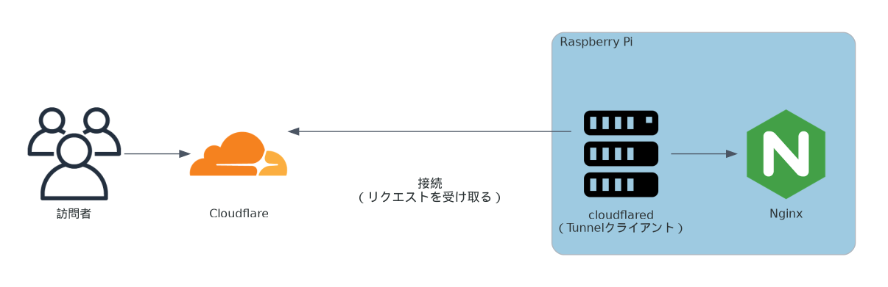

全体像
このサイトは Raspberry Pi 5 という、手のひらサイズの Linuxマシン上で動いています。
サイトのHTMLや画像は Raspberry Pi の中に置いてあり、Nginx というWebサーバーがそれを配信しています。
外部公開には Cloudflare Tunnel を使っています。
Nginx を直接インターネットへ公開するのではなく、Cloudflare Tunnel 経由にすることで、自宅ルーターのポート開放や固定IP/DDNSの管理に依存しにくい構成にしています。

Cloudflare Tunnelの仕組み
Cloudflare Tunnel は、Raspberry Pi 側の cloudflared というクライアントが Cloudflare に対して
外向きに接続を張り続けることで成立します。
この「内側から外側への接続」を使って、外部からのアクセスを安全に中継できます。
ポイントは次の2つです。
- Raspberry Pi 側から Cloudflare へ接続するため、ルーターのポート開放が不要
- Cloudflare が受けたリクエストを、既に確立されたトンネル経由で通知・転送する
この構成では、訪問者がアクセスする先は Cloudflare となり、Cloudflare は受けたリクエストをトンネル経由で Raspberry Pi の cloudflared に渡します。cloudflared はローカルの Nginx（127.0.0.1:8080）に転送し、Nginx が HTML や画像を返します。
自宅サーバーを外部へ直接公開する場合は、ルーターのポート開放や、
外部から到達してもらうためのグローバルIPの管理（固定IPまたはDDNS）が必要になることが多いです。
Cloudflare Tunnel を使うと、こうした自宅回線側の公開設定に頼らずに公開しやすくなります。
開発環境
同一 LAN 内の Windowsマシン から Raspberry Pi に SSH接続
- SSH は公開鍵認証のみ
ufw(ファイアウォール)を有効化し、LAN 内からの SSH接続以外を全て遮断